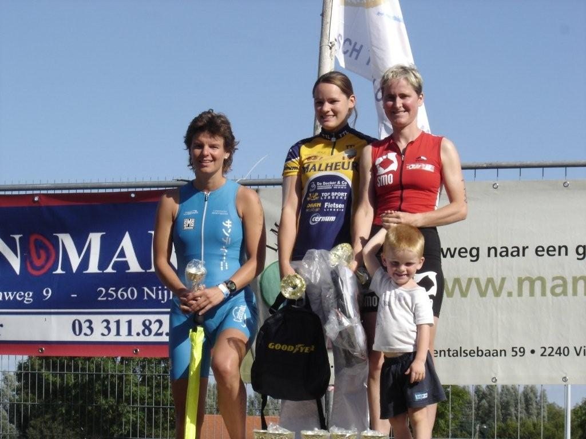
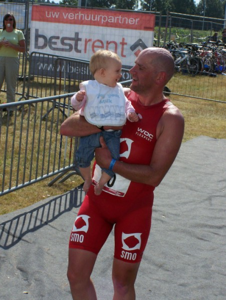

Kathleen Meire startte zondag 30 augustus in de 1/8 triatlon te Viersel. Een knappe organisatie van het Kempisch Triatlon Team met een jeugdwedstrijd, duatlon, sprintafstand en kwartafstand verspreid over een volledig tri- en duatlonevent.
Dirk Hellebuyck deed mee aan zijn laatste 1/4 triatlon en werd mooi 15de in zijn leeftijdscategorie (83ste in totaal klassement). Of dit effectief zijn laatste afscheidswedstrijd was, valt nog af te wachten... want het bloed stroomt waar het niet gaan kan. Het verslag van Kathleen kan je hieronder lezen.
Zondag deed ik mee aan de 1/8 triatlon van Viersel. Zoals verwacht was het zwemmen zonder wetsuit. Ik was bij de eerste in het water gegaan met gevolg dat ik al kou had
voor de start. Ik kwam als zevende vrouw uit het water en was weer niet zo tevreden. Ik weet wat te doen volgende winter!
Bij het fietsen had ik een goed gevoel, redelijk wat macht en tegenwind waardoor ik veel plaatsen heb kunnen goed maken. Als derde beginnen lopen en na 3 km zag ik de eerste twee voor mij ... het werd spannend! Uiteindelijk ben ik tweede geworden. Tegen het "jonge geweld" kan ik niet meer op.
Ik ben toch weer tevreden en voldaan. Een zeer mooie wedstrijd, een echte aanrader!
Succes aan mijn clubgenoten woensdag in knokke!
Kathleen